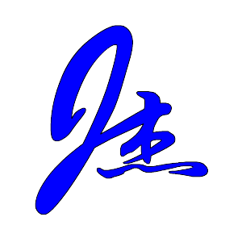

测量工程笔记
📋 文章
🛠️ 工具
👤 关于
📋 线元数据表
#
起点桩号
终点桩号
起点X
起点Y
方位角°
类型
半径
转向
Ls
A
💡 方位角支持：90.5（度） / 90 30 20（空格分隔度分秒） / 90°30′20″
➕ 添加
🗑️ 清空
📂 导入CSV
💾 导出CSV
📥 示例1
📥 示例2
📥 示例3
⚙️ 计算参数
📍 正算（桩号→坐标）
📏 反算（坐标→桩号）
桩号：
偏距：
（右偏为正）
🧮 坐标计算
目标X：
目标Y：
🧮 坐标计算
计算结果将在此显示
−
100%
+
↺
By Lvmyth AI
📊 计算结果
请输入线元数据并点击"坐标计算"按钮
计算结果将在此显示
📤 导出CSV